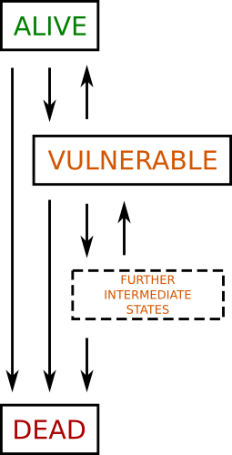

Cell viability models for tissue exposed to ablative temperatures can be broadly split into two classes: mechanistic lumped parameters models based on observations of the response of individual cells; and statistical models. Several of the mechanistic models are presented here as they can be captured by CellML.
The lumped parameter models of cell viability are based on observations that cells exposed to thermal insult can either recover or die. For this reason the models have a minimum of two compartments representing dead or alive cells, and a potentially infinite number of compartments representing the states between alive and dead. This can be represented schematically, as in Figure 1.
|  |
| Figure 1: Schematic of the available lumped parameter models of cell death. The minimum number of compartments is two, alive and dead. In this case cells can only go in one direction alive to dead. The rest of the models involve three or more compartments, where the extra compartments represent intermediate (vulnerable) states. The number of intermediate states and the rate of transmission between the compartments are the unique features of each of the models. |
The four models presented here are: